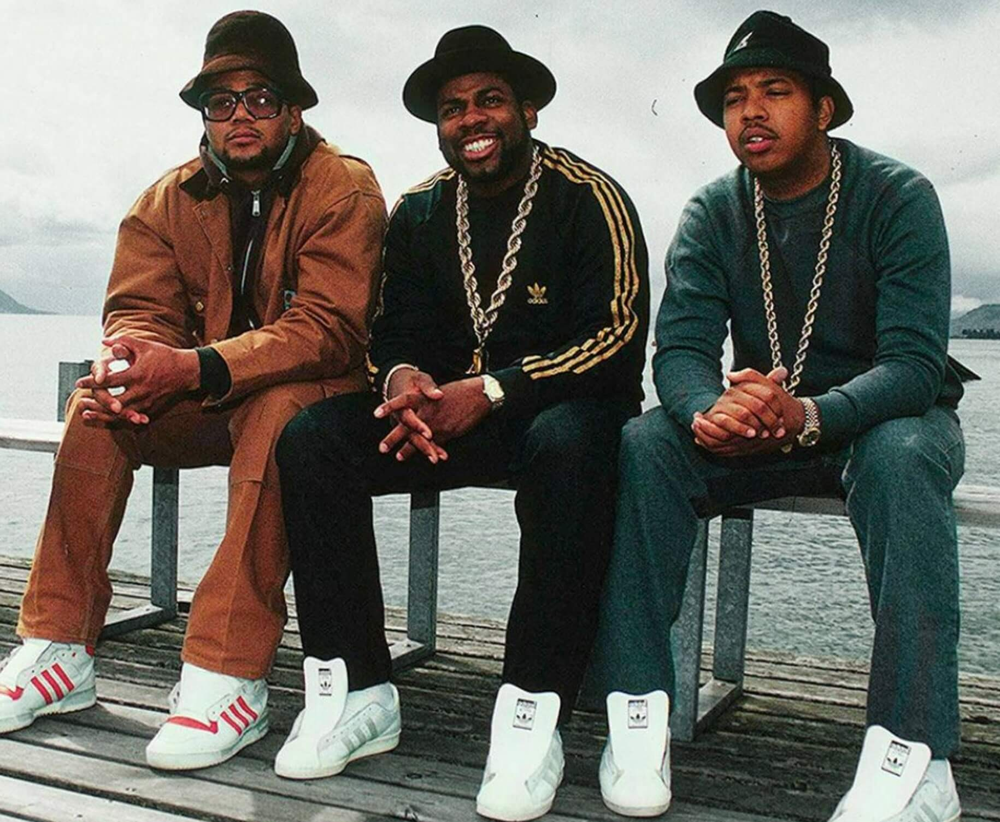
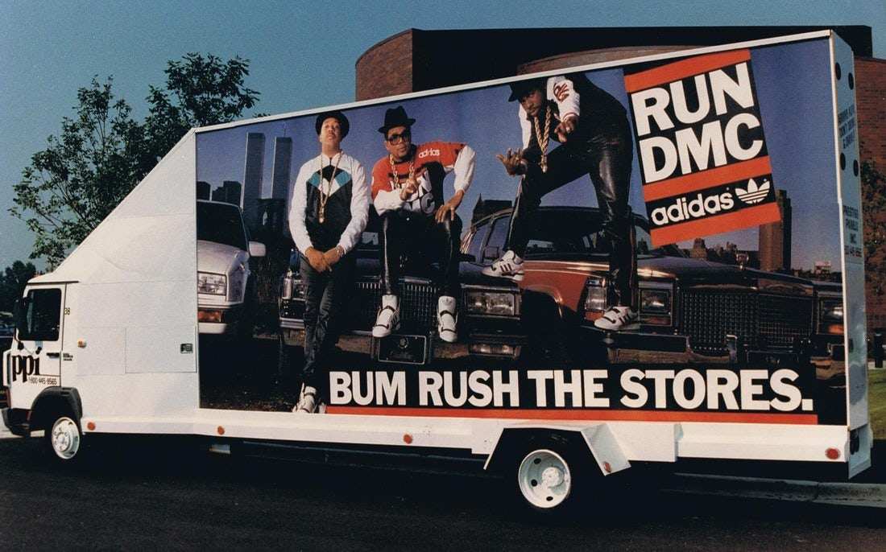
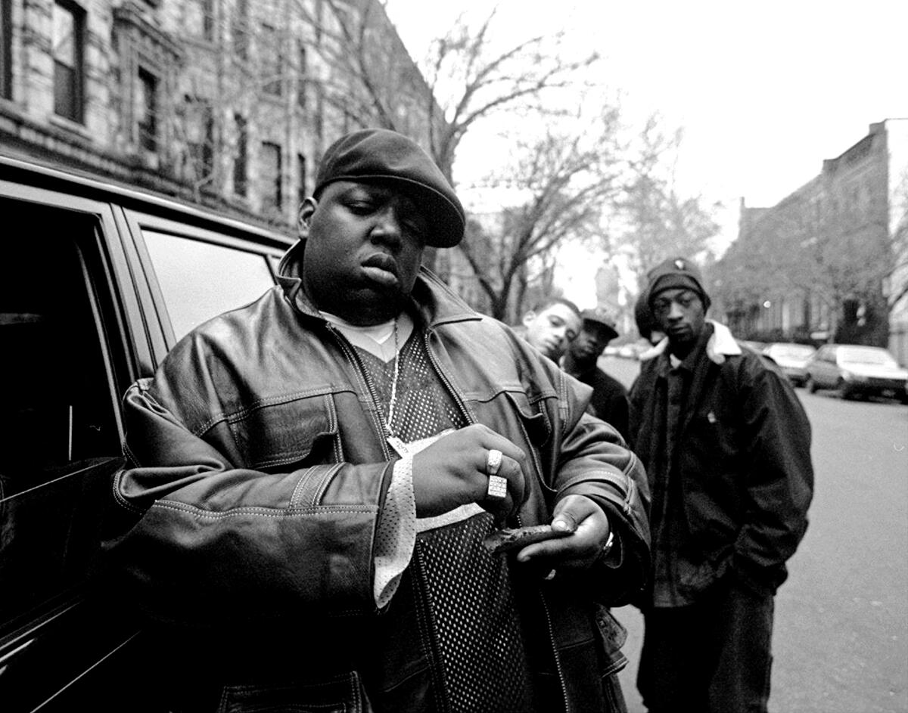
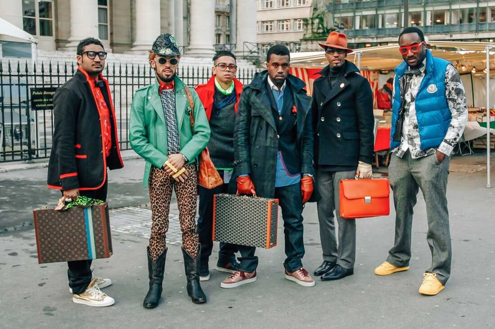

How Hip-Hop Transformed Streetwear Into High Fashion
Hip-hop, which emerged in the 1970s in the Bronx, New York, has profoundly influenced various cultural domains, particularly fashion. The rise of streetwear, characterized by casual, comfortable, and often bold apparel, has grown from the gritty streets of urban America to the runways of high fashion. This article delves into the historical context of hip-hop, the ascension of streetwear, and the significant influence of iconic brands and artists. Additionally, it explores the potential future of streetwear as it continues to intertwine with high fashion.
Hip-hop emerged as a powerful cultural movement, providing a voice for marginalized communities and expressing the struggles, joys, and creativity of urban youth. The culture encompasses four main elements: DJing, MCing (rapping), graffiti art, and breakdancing, each of which played a crucial role in the community's identity and resistance. Fashion has been integral to hip-hop from its inception. Early pioneers like Grandmaster Flash and the Furious Five made bold sartorial statements with their flamboyant outfits, setting the stage for a fashion movement that would evolve alongside the music. Hip-hop fashion in the late 1970s and early 1980s was marked by leather jackets, Kangol hats, and shell-toe Adidas sneakers, reflecting the gritty, urban roots of the culture.

Streetwear as we know it began to take shape in the 1980s and 1990s, heavily influenced by hip-hop artists who sought to distinguish themselves through unique styles. Brands like Adidas, Nike, and later, Supreme and A Bathing Ape, became staples within the community. These brands resonated with the hip-hop ethos of authenticity, individuality, and rebellion against mainstream norms.
One of the most iconic partnerships in hip-hop fashion history was Run-D.M.C.’s collaboration with Adidas. The group's hit song "My Adidas" and their endorsement deal in 1986 signaled a new era where musicians and fashion brands could forge mutually beneficial relationships. This partnership not only boosted Adidas's profile but also cemented sneakers as a critical component of hip-hop fashion. As Jeff Chang notes in his book Can’t Stop Won’t Stop: A History of the Hip-Hop Generation, Run-D.M.C. illustrated how hip-hop could be leveraged into powerful branding opportunities, a revolutionary concept at the time.
The 1990s saw the expansion of streetwear with brands like FUBU, Wu-Wear, and Rocawear emerging, each founded by influential figures in the hip-hop community. These brands embodied the spirit of the culture, offering accessible and stylish apparel that reflected the lived experiences and aspirations of urban youth.

Artists like Tupac Shakur, The Notorious B.I.G., Jay-Z, and Kanye West played significant roles in popularizing streetwear. Tupac’s bandanas, leather vests, and baggy jeans, Biggie’s Coogi sweaters and Versace shirts, and Jay-Z’s Rocawear line each left an indelible mark on fashion. Tupac, with his Thug Life persona, epitomized the rebellious spirit of hip-hop, while Biggie’s luxurious style represented the aspirational side of the culture.
Kanye West, in particular, revolutionized the industry with his Yeezy brand, blending high fashion with streetwear aesthetics. His partnership with Adidas resulted in the Yeezy sneaker line, which has become a cultural phenomenon and a symbol of the intersection between hip-hop and high fashion. Kanye's influence extends beyond his own brand; his work with Louis Vuitton and his role in shaping the aesthetics of contemporary fashion have made him a pivotal figure in the industry.

A pivotal figure in the fusion of streetwear and high fashion is Virgil Abloh. Known for his role as the artistic director of Louis Vuitton's menswear and the founder of Off-White, Abloh's influence on fashion is profound. He began his career interning at Fendi alongside Kanye West, and their collaborative efforts soon made waves in the fashion world. Abloh's approach was rooted in the blend of street culture with luxury fashion, a style he dubbed "the gray area between black and white as Off-White."
Off-White quickly became a powerhouse in streetwear, known for its distinctive use of quotation marks, zip ties, and bold branding. Abloh's designs challenge traditional fashion norms, often incorporating elements of irony and deconstruction. His appointment at Louis Vuitton in 2018 was historic, as he became one of the first African-Americans to lead a major luxury fashion house. This move symbolized not only a personal achievement for Abloh but also the growing acceptance and influence of streetwear in high fashion.
As streetwear continues to evolve, its future appears promising but also complex. With high fashion's full embrace, there is a risk of streetwear losing its subversive edge. However, this integration also presents opportunities for innovation and growth. The blending of these two worlds has led to a democratization of fashion, where streetwear's influence is felt across all levels of the industry.
By Miriam Guerrero